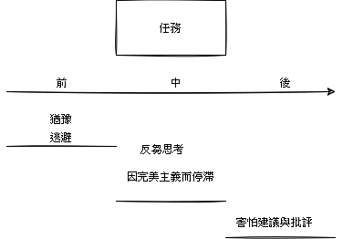

焦慮看起來像是甚麼樣子
- 行為
- 很想推遲重要但會引發焦慮的任務
- 不斷蒐集資訊卻不採取行動
- 行動之前亟需他人下達開始的指令
- 情緒
- 感到緊張, 擔心或恐懼
- 身體
- 心跳加快, 感到反胃
- 思想
- 害怕失敗
- 當你擔心他人對你的看法時, 會在腦中不斷重播事發經過
Photo by Christopher Ott on Unsplash
關於作者和本書
Alice Boyes是前臨床心理學家, 現職為作家, 本書的臨床診療相關資訊來自Alice於2008年至2013年期間在紐西蘭的工作
作者在協助過的焦慮患者中找到一些共通點, 並選擇在本書中關注與處理對於五種焦慮陷阱的反應: 過度猶豫不決, 反芻思考與擔憂, 因完美主義而停滯, 害怕建議與批評, 逃避(包含拖延)
書中介紹一些建議的思維和行為轉換方式, 稱之應對策略工具包, 方法根基於認知行為治療(cognitive behavioral therapy - CBT)
每一章都會從一個小測驗開始, 能夠衡量此章節與讀者的相關程度且了解學習目標, 應對策略工具包都會分為調整思維和調整行為兩大面向討論, Alice提醒根據需求和所處的階段找到適合的方法, 若某些建議不適合就忽略它
心得
這本書是2021年到目前為止, 我自己除了<最高學習法>之外, 覺得讀完很值得的一本, 看得當下會有種:恩, 和我平常內心浮現的聲音很類似, 大多偏向負面預測和自我貶低, 以及把大部分時間花在反芻思考和擔憂, 所以提到調整思維和行為的描述時都會有如獲至寶的感覺, 但就和看完大多數工具書一樣, 隔沒幾天就忘得乾乾淨淨了XD, 所以趁有時間整理並摘錄自己讀過覺得有感的地方
記得第一次看到認知行為治療這個名詞是在<恆毅力>, 那時有點印象, 想說之後有機會可以來接觸看看, 剛好這本書的作者就是以CBT做為內容的主要依據, 自己的感覺是一種同時從兩個層面下手的方法, 相輔相成, 類似生理和心理是雙向通道會互相影響的感覺
猶豫和逃避看起來非常類似, 一開始整理的時候有點搞不懂有甚麼差異, 後來想了想比較像是對事情的主動性, 猶豫是偏向那些自我目標延伸的任務, 逃避面對的任務可能是家人朋友工作外加給自己的任務
調整行為的部分, 很多時候都會浮現電腦玩物站長Esor的<時間管理的30道難題>的具體作法, 例如: 利用設定下一階段成果來推進一件任務
以下是幾個特別有感覺的部分:
面對舊思維時不是使用打破的方式而是採取同時觸發, 建立和加強另一個新想法
例如: 遇到新的功能要開發, 舊思維會偏向產生負面結果: 我會不會做不出來, 搞砸了怎麼辦, 同時, 觸發新想法, 我可以在這個過程中釐清和訓練想法, 增加自己對需求的分析實作能力
練習用自我包容代替自我批判來減少反芻思考, 同時也能夠照顧自己, 對自己多一些寬容
自我批判中常常出現”應該/不應該”的想法, 例如:我不應該讓大家失望, 我應該更有能力地處理好這件事情, 試試看將自我談話中的任何”應該”都替換成”想要”, 或許不會很快轉換焦慮, 但能中斷反芻思考
對於五種焦慮陷阱的應對策略
人在面對一件事情, 在不同時期的反應
挑幾個較有感覺的部份出來摘要

猶豫
調整思維
你的行為也可能產生正向的結果
Photo by Vladislav Babienko on Unsplash
預設自己的行為會產生負面結果, 這種傾向是焦慮問題的核心, 可能會產生全或無的陷阱, 適時覺察自己正做出負面預測, 並接受其他可能, 就有機會減輕大部分的焦慮
利用一些會觸發舊思維的情境, 協助觸發新想法, 建立和加強一個新習慣, 例如:當出現你所害怕的結果這個念頭出現的同時, 觸發新思維: 另一種可能結果是什麼
調整行為
立即減少焦慮
透過減緩呼吸的這個生理事實
練習忍受不確定感
當你沒辦法百分之百確定會成功, 就去尋找你可以嘗試採取行動的機會
問問自己:你盡力了嗎
當帶有不確定感的機會出現時, 就找出一些採取行動可能會有的好處
- 結果也有可能會還不錯
- 就算結果不如預期, 也可以了解當初的點子行不通
- 行動之後就再也不用左思右想
反芻思考
反芻: 在心中重複播放已經發生過的事, 無論是近期還是許久以前的事件
擔憂: 擔心將來會發生什麼事, 往往是來自對自己應對情況的能力卻乏信心
焦慮和反芻思考會形成一個相互回饋的循環, 造成糾結在擔憂和自我批判之中
調整思維
分辨自己何時陷入反芻
記下各個你經常反芻思考的主題
分辨出擔憂/反芻與有效解決問題之間有何不同
焦慮會使思維變得消極, 狹隘和僵化, 憂心忡忡的人往往更會認為擔憂能幫助他們做出更正確的決定
若要確認自己的反芻思考和擔憂是否能導向有益的行動, 試著追蹤一下一周內總共花了多少時間來反芻思考和擔憂或是嘗試追蹤兩天(一個平日和一個假日), 並注意反芻思考和擔憂是否真的有導向有用的解決方案
減少自我批判
這個是減少反芻思考的一大關鍵, 練習用自我包容代替自我批判, 找出一個想要關注的錯誤或弱點, 然後按照以下說明花三分鐘寫下來: 想像你正在用包容和理解的角度對自己談論該錯誤或弱點, 你會說些什麼?
用自我批判來鞭策自己的人, 通常會擔心減少自我批判就會讓自己變得懶惰, 事實上, 對自己多一點寬容而不是批評, 往往會使你變得更加努力
了解你的自我批判只是出於焦慮
焦慮的人會有”應該/不應該”的想法, 試著注意何時陷入這個思考陷阱
將自我談話中的任何”應該”都替換成”想要”, 舉例: 我現在應該取得更多成果=>我希望現在能取得更多成果, 能夠讓你用一種更友善, 更有耐心的方式與自己交談, 或許不會很大程度上轉換焦慮, 但足以幫助你中斷反芻思考
使人停滯的完美主義
調整思維
覺察非此即彼的思維
基本假設如下: 我一定要隨時隨地都表現得無懈可擊, 否則就會導致一場災難
非此即彼: 要不就是無懈可擊的表現, 要不就是徹徹底底地失敗, 沒有中間值
超高標準之所以出現, 經常是因為人們試圖隱藏自己想像中災難性的缺陷, 一旦缺陷被被察覺, 他們將會遭到排除
將思維從”表現目標”轉移到”精熟目標”
表現目標(performance focus): 最優先的考量是彰顯自己當下可以將事情做得很好
精熟目標(mastery focus): 最關心的是如何提升自己的技能, 想法常常是我的目標是駕馭這些技能而非我需要表現優異才能證明自己
精熟目標可以幫助你在挫折之後繼續堅持下去, 減少對個別失敗案例的不安, 增加找出錯誤的意願, 避免因為對自己過度批評而導致你對自己修正錯誤的能力失去信心
試試看以下方式:
我的目標是精熟關於____的技能
回答以下問題, 盡可能具體地說明你的答案
有著和你相同精熟目標的人會
- 對錯誤, 挫折, 失望和負面情緒作何反應
- 優先處理那些任務
- 當他們在某件事上耗費續許多時間, 接著發現這個策略或想法並不如他們所希望的那麼有潛力時, 會出現甚麼反應
- 如何確保自己能有效學習並獲得技能
- 當他們感到焦慮時會做何反應
調整我應該要更努力的思維以防精疲力盡
焦慮的完美主義者經常被以下三者的強烈組合驅使著去努力工作:抱負, 責任感和若不加倍努力就會導致災難的擔憂, 卻沒有採取任何適當的策略
受困模式: 焦慮,沮喪 => 我要更努力工作的思維陷阱 => 提高我的目標 => 感到更焦慮且可能開始拖延
較有益的模式: 焦慮,沮喪 => 我要更努力工作的思維陷阱 => 發現思維陷阱 => 休息一下 => 回到工作崗位並保持我自知能做到的行為目標
懼怕建議與批評
建議能人進步, 但焦慮的人通常會逃避接受建議, 原因是建議會使他們覺得很有威脅感
如果你因為他人給予建議就感到焦慮, 並且從此對建議採取封閉態度或糟糕的回應, 你與提供建議的人之間的關係也互因此變得緊張
你對於自己在接受評價後做出修正的能力沒有信心, 逃避獲得評價, 因為它會讓你陷入反芻思考模式, 而且你很難掙脫那種情況, 你如此害怕被評價, 以至於你會去逃避一些機會, 只要那些機會中包含了更多會讓你受到評價的可能
逃避
你不太想去做一些你必須去做的事
行為上的: 逃避面對一些會讓你焦慮的情況或拒絕去做一些會讓你焦慮的事
認知上的: 試圖避免去思考一些會使你感到焦慮的事情
一旦你逃避, 你就錯過了學習應對各種情況的機會, 也沒有辦法透過經驗學到更多技能
調整思維
了解自己: 你是僵化者, 逃跑者還是戰鬥者
當面對想要逃避的事物時, 可以從你的主要反應看出你是哪一種逃避類型, 可能反應共有三種: 立即僵化, 急忙逃跑和奮力戰鬥
當逃跑者想要避免去做某件事時, 他們會去做很多其他的事情, 來合理化自己的逃避, 例如: 幫孩子安排大量的行程, 好讓他們總是忙東忙西, 帶著小孩去參加一個又一個的活動卻不去處理自己的問題
而戰鬥者會透過更努力地工作來回應焦慮, 經常會獨自埋頭工作但不去處理問題的癥結
覺察到拖延下的思維扭曲
當你發現自己正在拖延時就瀏覽以下的思維偏誤列表, 看看是否有幫助
- 全或無的極端思維
- 你需要整理房間但沒有動力, 寧可甚麼也不做, 也不願整理一兩樣東西
- 你認為每件事都要做得很好, 如果你無法達到一個優秀的水平, 你通常就會完全逃避它
- 你對自己所能完成的是設下了不切實際的目標, 結果導致你徹底逃避所有的事, 因為事情多到讓你不知所措
- 負面預測
- 你認為只要去嘗試就會失敗
- 你不願意去詢問他人, 因為你認為其他人一定不敢興趣或者會拒絕(猜測他人心思)
- 你推遲了聽取用戶評價, 因為你預期評價一定會是負面的, 你不願讓客戶試用產品
- 你高估了任務的難度或不愉快的程度
- 低估了自己的應對能力
- 你低估了自己的應對能力, 認為你無法面對無聊, 有壓力或引起焦慮的任務
- 當作有針對性的
- 放大了任務對你而言的困難程度, 而不去看任務本身是否困難, 這也給了你藉口去合理化你的逃避行為
- 你認為你解決不了某事的原因是因為你太愚蠢才導致無法處理, 而不是認為這件事本身具有挑戰性也需要慢慢學習
- 你認為自己是唯一一個遇到問題的人
調整行為
處理你的逃避等級
暴露法, 關鍵是循序漸進, 你就會慢慢有信心去做一些原本讓你更焦慮的事情
- 先列出所有你會因焦慮而逃避的情況和行為
- 在清單上的每一個項目旁寫下一個數字
- 根據焦慮會引發你逃避該項目的程度
- 0 - 100級
- 從等級最低排到等級最高, 目的是建立一個列表, 觀察每十級之內你的逃避行為有哪些
- 從列表中最低的等級開始, 計畫你會如何處理每十級中的焦慮情境
- 可能的話, 多去面對幾次你原本會逃避的那些情境, 再去計畫下一個十級的處理方法